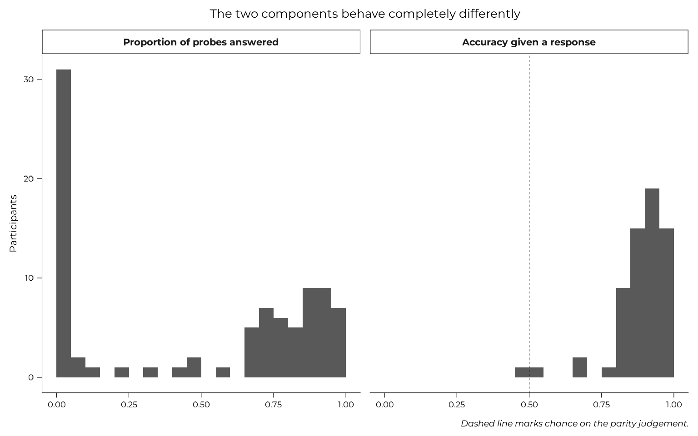
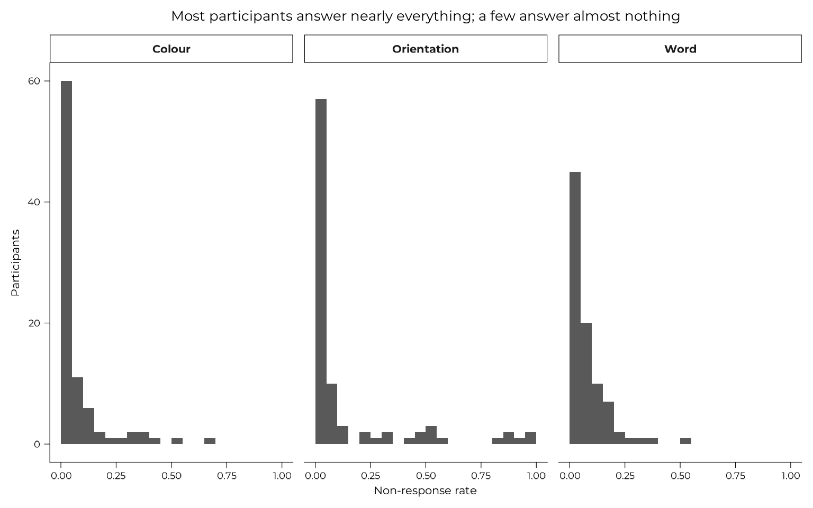

Task engagement: two ways to ease the difficulty
Source:vignettes/articles/engagement.Rmd
engagement.RmdParticipants sometimes chose to refuse to do some parts of the WM-FTT to mitigate the difficulty: the parity-judgement distractor between encoding and recall, and some of the recall responses themselves. This page establishes what each of those variables measures, shows that they are separate behaviours, and argues that neither is a nuisance to be controlled away.
The second claim is the one the modelling pages depend on. Under a points-per-feature incentive with optional recall, declining to report a feature is an allocation decision, not missing data.
block_trials <- all_data |>
dplyr::filter(grepl("^expe_block", expe_phase), version == "v1")
by_participant <- block_trials |>
dplyr::summarise(
# Parity is split into its two components. Section 2 shows why the
# `parity_*_acc` columns cannot be used directly.
parity_probes = 2 * dplyr::n(),
parity_answered = sum(responded_parity_1) + sum(responded_parity_2),
parity_correct = sum(parity_1_acc) + sum(parity_2_acc),
non_response_word = 1 - mean(responded_word),
non_response_orientation = 1 - mean(responded_angle),
non_response_colour = 1 - mean(responded_color),
vviq = dplyr::first(vviq_total_score),
imagery_group = dplyr::first(vviq_group_2),
.by = id
) |>
dplyr::mutate(
parity_rate = parity_answered / parity_probes,
parity_accuracy_given_response =
dplyr::if_else(parity_answered > 0, parity_correct / parity_answered,
NA_real_),
# what a naive mean of `parity_*_acc` gives, kept for section 2
parity_accuracy_naive = parity_correct / parity_probes
)
# The per-feature recall engagement thresholds. A participant contributes
# to a feature only if the standard error of their mean is at most half
# the between-person SD; `wm_thresholds()` holds the resulting counts,
# hard-coded so they cannot drift with the sample. The task validity page
# derives them.
engaged <- engaged_ids(block_trials)engaged_ids() keeps only the participants who answered
at least 32 word, 22 orientation and 29 colour items of the 63
presented. The task validity page
derives those numbers and explains what they are for; here they serve
only to separate abandoning the distractor from abandoning the
task.
1. The parity task had no consequence in v1
The parity was meant to increase the cognitive load of the participants, however, as of v1, not doing it did not cost them any points in the final score (the penalty for not doing the parity was added in v2). No deduction was ever applied, so a participant who worked out that parity did not count lost nothing by ignoring it.
Some of them worked it out.
optout <- dplyr::filter(by_participant, parity_rate == 0)
tibble::tibble(
participants = nrow(by_participant),
answered_no_parity_probe = nrow(optout),
of_those_clearing_recall_thresholds = sum(optout$id %in% engaged)
) |>
knitr::kable(caption = "Participants who ignored the distractor entirely, v1")| participants | answered_no_parity_probe | of_those_clearing_recall_thresholds |
|---|---|---|
| 88 | 25 | 23 |
25 of 88 participants answered no parity probe at all, and 23 of those clear the per-feature engagement thresholds on the recall task. That is not withdrawal. Under v1’s incentives, abandoning a consequence-free secondary task while keeping recall performance intact was the rational move.
2. What the parity accuracy column actually measures
parity_1_acc and parity_2_acc score an
unanswered probe as 0, the same convention the recall
scores use. That makes a zero ambiguous, and in v1 the ambiguity is
close to total.
tibble::tibble(
zeros = sum(block_trials$parity_1_acc == 0),
unanswered = sum(block_trials$parity_1_acc == 0 & !block_trials$responded_parity_1),
answered_and_wrong = sum(block_trials$parity_1_acc == 0 & block_trials$responded_parity_1)
) |>
knitr::kable(caption = "Zeros on parity_1_acc, v1: what they are")| zeros | unanswered | answered_and_wrong |
|---|---|---|
| 3315 | 3046 | 269 |
Most of them are probes nobody answered. A participant mean of that column is therefore not an accuracy measure. Split into its two components, the two barely relate to each other:
components <- dplyr::filter(by_participant, !is.na(parity_accuracy_given_response))
tibble::tibble(
quantity = c("Naive mean of parity_*_acc", "Proportion of probes answered",
"Accuracy given a response"),
median = c(stats::median(by_participant$parity_accuracy_naive),
stats::median(by_participant$parity_rate),
stats::median(components$parity_accuracy_given_response)),
at_exactly_zero = c(sum(by_participant$parity_accuracy_naive == 0),
sum(by_participant$parity_rate == 0), 0L)
) |>
knitr::kable(digits = 3, caption = "Three quantities, v1")| quantity | median | at_exactly_zero |
|---|---|---|
| Naive mean of parity_*_acc | 0.591 | 25 |
| Proportion of probes answered | 0.694 | 25 |
| Accuracy given a response | 0.908 | 0 |
tibble::tibble(
pair = c("Naive mean vs proportion answered",
"Naive mean vs accuracy given a response",
"Proportion answered vs accuracy given a response"),
r = c(stats::cor(by_participant$parity_accuracy_naive, by_participant$parity_rate),
stats::cor(components$parity_accuracy_naive,
components$parity_accuracy_given_response),
stats::cor(components$parity_rate,
components$parity_accuracy_given_response))
) |>
knitr::kable(digits = 3, caption = "What the naive column is made of")| pair | r |
|---|---|
| Naive mean vs proportion answered | 0.989 |
| Naive mean vs accuracy given a response | 0.215 |
| Proportion answered vs accuracy given a response | 0.043 |
The naive column is almost perfectly correlated with the proportion of probes answered, and weakly with accuracy among those answered. It is a response-rate variable wearing an accuracy name. Meanwhile the two real components are close to orthogonal, so collapsing them does not blur two related quantities: it discards one.
by_participant |>
dplyr::select(id, parity_rate, parity_accuracy_given_response) |>
tidyr::pivot_longer(-id, names_to = "quantity", values_to = "value") |>
dplyr::mutate(quantity = factor(
dplyr::recode(quantity,
parity_rate = "Proportion of probes answered",
parity_accuracy_given_response = "Accuracy given a response"),
# narrative order, not alphabetical
levels = c("Proportion of probes answered", "Accuracy given a response")
)) |>
ggplot(aes(value)) +
geom_histogram(binwidth = 0.05, boundary = 0) +
# chance is only a reference point for the accuracy panel; drawing it on
# a response rate would imply something it does not mean
geom_vline(
data = tibble::tibble(quantity = factor("Accuracy given a response",
levels = c("Proportion of probes answered", "Accuracy given a response"))),
aes(xintercept = 0.5), linetype = "dashed"
) +
facet_wrap(~quantity) +
labs(x = NULL, y = "Participants",
title = "The two components behave completely differently",
caption = "Dashed line marks chance on the parity judgement.")
Whether someone did the distractor is bimodal, with a hard spike at zero. How well they did it, among those who did, is unimodal and well above the chance line. Only the second is an accuracy variable.
The false claim that might have emerged
An earlier version of this page reported a correlation between the naive column and VVIQ and concluded that it was “the finding that stops parity accuracy being usable as a nuisance covariate”. Both halves of that were too strong.
usable <- dplyr::filter(by_participant, !is.na(vviq))
naive_vviq <- correlation_test(usable$parity_accuracy_naive, usable$vviq)
dplyr::bind_rows(
dplyr::mutate(naive_vviq, quantity = "Naive mean of parity_*_acc"),
dplyr::mutate(correlation_test(usable$parity_rate, usable$vviq),
quantity = "Proportion of probes answered"),
dplyr::mutate(
correlation_test(usable$parity_accuracy_given_response, usable$vviq),
quantity = "Accuracy given a response")
) |>
dplyr::select(quantity, n, rho, p) |>
knitr::kable(digits = 4, caption = "Parity against VVIQ, v1")| quantity | n | rho | p |
|---|---|---|---|
| Naive mean of parity_*_acc | 86 | -0.1540 | 0.1569 |
| Proportion of probes answered | 86 | -0.1288 | 0.2374 |
| Accuracy given a response | 62 | -0.1236 | 0.3384 |
The original figure was rho = -0.154 with p = 0.157, which is not evidence for a direction, and it came from a variable that measures willingness rather than accuracy. Neither corrected component does any better. Parity engagement is not related to imagery vividness in the v1 sample.
3. The second signal: declining to report a feature
Between 6.7% and 13.6% of v1 recall items receive no response at all. The task encodes these with sentinels rather than missing values, and the Scoring page covers how they are handled.
by_participant |>
tidyr::pivot_longer(tidyselect::starts_with("non_response_"),
names_to = "feature", values_to = "rate",
names_prefix = "non_response_") |>
dplyr::mutate(feature = stringr::str_to_title(feature)) |>
ggplot(aes(rate)) +
geom_histogram(binwidth = 0.05, boundary = 0) +
facet_wrap(~feature) +
labs(x = "Non-response rate", y = "Participants",
title = "Most participants answer nearly everything; a few answer almost nothing")
4. The two are not the same behaviour
The natural assumption is that both are effort withdrawal, in which case one variable would do. They are not.
by_participant |>
tidyr::pivot_longer(tidyselect::starts_with("non_response_"),
names_to = "feature", values_to = "non_response",
names_prefix = "non_response_") |>
dplyr::summarise(
rho = stats::cor(non_response, parity_rate, method = "spearman"),
p = suppressWarnings(stats::cor.test(non_response, parity_rate,
method = "spearman")$p.value),
.by = feature
) |>
dplyr::mutate(feature = stringr::str_to_title(feature)) |>
knitr::kable(digits = 3,
caption = "Feature non-response against parity engagement, v1")| feature | rho | p |
|---|---|---|
| Word | 0.112 | 0.300 |
| Orientation | -0.077 | 0.477 |
| Colour | -0.082 | 0.447 |
The correlations are near zero and inconsistent in sign. Ignoring the distractor tells you essentially nothing about whether someone will answer a recall prompt, which is what a shared-disengagement account would need. Parity and non-response variables reflect two behaviours, not one.
5. What this means downstream
Parity engagement is not a confound. It does not differ by imagery group:
floor_split <- by_participant |>
dplyr::filter(!is.na(vviq), id %in% engaged) |>
dplyr::mutate(floor = dplyr::if_else(vviq == 16, "VVIQ floor", "Above floor"))
floor_split |>
dplyr::summarise(
participants = dplyr::n(),
mean_parity_rate = mean(parity_rate),
.by = floor
) |>
knitr::kable(digits = 3,
caption = "Parity engagement by imagery group, engaged sample")| floor | participants | mean_parity_rate |
|---|---|---|
| VVIQ floor | 18 | 0.505 |
| Above floor | 61 | 0.495 |
stats::wilcox.test(parity_rate ~ floor, data = floor_split, exact = FALSE)
#>
#> Wilcoxon rank sum test with continuity correction
#>
#> data: parity_rate by floor
#> W = 540.5, p-value = 0.9247
#> alternative hypothesis: true location shift is not equal to 0It is still worth carrying in the accuracy models, but as the
dual-task load a participant actually incurred, which
is a strategy variable in its own right, rather than as a control for
something it does not predict. Every accuracy model on this site carries
it, and no gate does: the composition, performance and joint model pages all put
parity_rate on the arms that model how well a feature was
recalled, and leave it off the arms that model whether it was recalled
at all.
Non-response is the substantive one. It is folded
into the recall scores as zeros, so any analysis of accuracy that
ignores the responded_* flags is measuring a blend of
accuracy and willingness to answer. Under a points-per-feature incentive
with optional recall, choosing not to report a feature
is an allocation decision, and arguably a more direct
one than how accurately a reported feature was recalled. Treating it as
missing data discards the clearest strategic signal the task produces.
That is why the joint model fits whether
a feature was reported and how well it was reported together, rather
than conditioning on the first and analysing only the second.
Continuing through the Extended Online Report: this page follows scoring. To keep reading in order, continue to versions next. Or skip ahead to the analysis, which explains what the modelling pages do and why.
#> ─ Session info ───────────────────────────────────────────────────────────────
#> setting value
#> version R version 4.6.1 (2026-06-24)
#> os Ubuntu 22.04.5 LTS
#> system x86_64, linux-gnu
#> ui X11
#> language en
#> collate C.UTF-8
#> ctype C.UTF-8
#> tz UTC
#> date 2026-08-31
#> pandoc 3.8.3 @ /opt/hostedtoolcache/pandoc/3.8.3/x64/ (via rmarkdown)
#> quarto NA
#>
#> ─ Packages ───────────────────────────────────────────────────────────────────
#> package * version date (UTC) lib source
#> aphantasiaWMStrats * 0.1 2026-08-31 [1] local
#> bslib 0.12.0 2026-08-04 [2] CRAN (R 4.6.1)
#> cachem 1.1.0 2024-05-16 [2] CRAN (R 4.6.1)
#> cli 3.6.6 2026-04-09 [2] CRAN (R 4.6.1)
#> crayon 1.5.3 2024-06-20 [2] CRAN (R 4.6.1)
#> curl 8.0.0 2026-08-25 [2] CRAN (R 4.6.1)
#> desc 1.4.3 2023-12-10 [2] CRAN (R 4.6.1)
#> digest 0.6.39 2025-11-19 [2] CRAN (R 4.6.1)
#> dplyr 1.2.1 2026-04-03 [2] CRAN (R 4.6.1)
#> evaluate 1.0.5 2025-08-27 [2] CRAN (R 4.6.1)
#> farver 2.1.2 2024-05-13 [2] CRAN (R 4.6.1)
#> fastmap 1.2.0 2024-05-15 [2] CRAN (R 4.6.1)
#> fs 2.1.0 2026-04-18 [2] CRAN (R 4.6.1)
#> generics 0.1.4 2025-05-09 [2] CRAN (R 4.6.1)
#> ggplot2 * 4.0.3 2026-04-22 [2] CRAN (R 4.6.1)
#> glue 1.8.1 2026-04-17 [2] CRAN (R 4.6.1)
#> gtable 0.3.6 2024-10-25 [2] CRAN (R 4.6.1)
#> htmltools 0.5.9 2025-12-04 [2] CRAN (R 4.6.1)
#> jquerylib 0.1.4 2021-04-26 [2] CRAN (R 4.6.1)
#> jsonlite 2.0.0 2025-03-27 [2] CRAN (R 4.6.1)
#> knitr 1.51 2025-12-20 [2] CRAN (R 4.6.1)
#> labeling 0.4.3 2023-08-29 [2] CRAN (R 4.6.1)
#> lifecycle 1.0.5 2026-01-08 [2] CRAN (R 4.6.1)
#> magrittr 2.0.5 2026-04-04 [2] CRAN (R 4.6.1)
#> otel 0.2.0 2025-08-29 [2] CRAN (R 4.6.1)
#> pillar 1.11.1 2025-09-17 [2] CRAN (R 4.6.1)
#> pkgconfig 2.0.3 2019-09-22 [2] CRAN (R 4.6.1)
#> pkgdown 2.2.1 2026-07-07 [2] any (@2.2.1)
#> purrr 1.2.2 2026-04-10 [2] CRAN (R 4.6.1)
#> R6 2.6.1 2025-02-15 [2] CRAN (R 4.6.1)
#> ragg 1.5.2 2026-03-23 [2] CRAN (R 4.6.1)
#> RColorBrewer 1.1-3 2022-04-03 [2] CRAN (R 4.6.1)
#> renv 1.0.7 2024-04-11 [2] RSPM (R 4.6.1)
#> rlang 1.3.0 2026-07-05 [2] CRAN (R 4.6.1)
#> rmarkdown 2.31 2026-03-26 [2] CRAN (R 4.6.1)
#> S7 0.2.2 2026-04-22 [2] CRAN (R 4.6.1)
#> sass 0.4.10 2025-04-11 [2] CRAN (R 4.6.1)
#> scales 1.4.0 2025-04-24 [2] CRAN (R 4.6.1)
#> sessioninfo 1.2.4 2026-06-04 [2] CRAN (R 4.6.1)
#> showtext 0.9-8 2026-03-21 [2] CRAN (R 4.6.1)
#> showtextdb 3.0 2020-06-04 [2] CRAN (R 4.6.1)
#> stringi 1.8.9 2026-08-04 [2] CRAN (R 4.6.1)
#> stringr 1.6.0 2025-11-04 [2] CRAN (R 4.6.1)
#> sysfonts 0.8.9 2024-03-02 [2] CRAN (R 4.6.1)
#> systemfonts 1.3.2 2026-03-05 [2] CRAN (R 4.6.1)
#> textshaping 1.0.5 2026-03-06 [2] CRAN (R 4.6.1)
#> tibble 3.3.1 2026-01-11 [2] CRAN (R 4.6.1)
#> tidyr 1.3.2 2025-12-19 [2] CRAN (R 4.6.1)
#> tidyselect 1.2.1 2024-03-11 [2] CRAN (R 4.6.1)
#> vctrs 0.7.3 2026-04-11 [2] CRAN (R 4.6.1)
#> withr 3.0.3 2026-06-19 [2] CRAN (R 4.6.1)
#> xfun 0.60 2026-07-09 [2] CRAN (R 4.6.1)
#> yaml 2.3.12 2025-12-10 [2] CRAN (R 4.6.1)
#>
#> [1] /tmp/RtmpBySS6f/temp_libpath83f676124fdd
#> [2] /home/runner/.cache/R/renv/library/aphantasiaWMStrats-f7ce8556/linux-ubuntu-jammy/R-4.6/x86_64-pc-linux-gnu
#> [3] /home/runner/.cache/R/renv/sandbox/linux-ubuntu-jammy/R-4.6/x86_64-pc-linux-gnu/e7c0fad7
#> * ── Packages attached to the search path.
#>
#> ──────────────────────────────────────────────────────────────────────────────